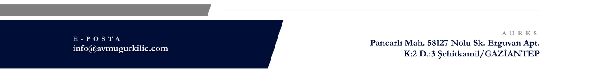

Sık kullanılan dilekçeler
Dilekçeler çalışma alanlarına göre gruplanmıştır. Her birinde hangi mercie verileceği, süresi ve en çok atlanan noktalar ayrıca belirtilmiştir. Dilekçelerin tamamı danışmanlık görüşmesinde paylaşılır.
Okumadan kullanmayın
Bu örnekler genel bilgilendirme amaçlıdır ve hiçbir somut olaya doğrudan uyarlanamaz. Her dosyanın kendi olguları, delilleri ve süreleri vardır.
Dilekçelerdeki süreler çoğunlukla hak düşürücüdür; kaçırılması hâlinde hakkınızı bir daha kullanamazsınız. Yanlış mercie verilen ya da eksik yazılan bir dilekçe de aynı sonucu doğurabilir.
Bu sayfadaki örneklerin kullanılmasından doğacak sonuçlardan sorumluluk kabul edilmez. Somut durumunuz için bir avukata danışmanız gerekir.
Trafik Kazası ve Tazminat
Sigorta şirketine başvuru dilekçesi
- Nereye verilir
- Kusurlu aracın zorunlu mali sorumluluk (trafik) sigortasını yapan şirketin genel müdürlüğüne.
- Süre
- Dava açmadan önce bu başvurunun yapılması zorunludur. Şirket 15 gün içinde yazılı cevap vermezse ya da cevap talebi karşılamazsa dava açılabilir veya Sigorta Tahkim Komisyonu'na başvurulabilir.
Dikkat edilecekler
- 2918 sayılı Kanun'un 97. maddesi başvurunun yazılı olmasını arıyor. Telefonla yapılan görüşme başvuru yerine geçmez.
- Başvuruyu iadeli taahhütlü posta, noter veya KEP ile gönderin. Dava açarken başvurunun yapıldığını ve tarihini ispatlamanız gerekir.
- 99. maddeye göre sigortacı, genel şartlarda sayılan belgeler kendisine ulaştıktan sonra sekiz iş günü içinde ödeme yapmak zorundadır. Bu nedenle belgeleri baştan eksiksiz gönderin.
- Araç değer kaybı talebiniz varsa aynı başvuruda ayrıca belirtin.
Dilekçe örneğinden bir bölüm

[SİGORTA ŞİRKETİNİN UNVANI] GENEL MÜDÜRLÜĞÜNE
[Şirketin adresi]
BAŞVURAN : [Ad Soyad] (T.C. [kimlik numarası])
ADRES : [Adres]
TELEFON : [Telefon]
POLİÇE / HASAR
DOSYA NUMARASI : [Biliniyorsa yazın]
KONU : [Kaza tarihi] tarihli trafik kazası nedeniyle doğan
zararımın tazmini talebimdir.
AÇIKLAMALAR
1. [Tarih] günü saat [saat] sıralarında [kazanın olduğu yer] adresinde,
[kendi plakanız] plakalı aracım ile [karşı plaka] plakalı aracın
karıştığı bir trafik kazası meydana gelmiştir. Kaza, ekte sunulan
kaza tespit tutanağı ile belirlenmiştir.
Dilekçenin devamı için iletişime geçin
Dilekçenin tamamı, dosyanıza özgü değerlendirme ile birlikte danışmanlık görüşmesinde paylaşılır.

Trafik kazası maddi hasar davasına cevap dilekçesi (yetki itirazı, sigorta ödemelerinin mahsubu)
- Nereye verilir
- Davanın açıldığı asliye ticaret mahkemesine (veya ticaret mahkemesi sıfatıyla bakan asliye hukuk mahkemesine); UYAP üzerinden.
- Süre
- Dava dilekçesinin tebliğinden itibaren iki hafta (HMK 127; basit yargılamada HMK 317). Yetki itirazı bir ilk itirazdır ve cevap dilekçesiyle birlikte ileri sürülmezse hak kaybedilir.
Dikkat edilecekler
- Yetki itirazında, kesin yetki hâli yoksa yetkili bütün mahkemeleri göstermeniz gerekir (HMK 19/2). KTK 110'a göre davalar sigortacının şubesinin veya acentenin bulunduğu yerde ya da kaza yerinde de açılabilir; HMK 6 ve 16'yı da birlikte değerlendirin.
- Sigorta şirketinden ödeme dekontlarını ve hasar dosyasını müzekkereyle getirtin. Aynı zarar için başka bir dosyada (Sigorta Tahkim Komisyonu, icra) tahsilat yapılmışsa mutlaka belirtin.
- KTK 109 uyarınca maddi zarar talepleri, zarar ve tazminat yükümlüsünün öğrenilmesinden itibaren iki yılda ve her hâlde kazadan itibaren on yılda zamanaşımına uğrar. Zamanaşımı def'ini cevap dilekçesinde ileri sürün.
- Basit yargılama usulünde cevaba cevap ve ikinci cevap aşaması yoktur. Bütün savunma ve delillerinizi bu dilekçede eksiksiz bildirin.
Dilekçe örneğinden bir bölüm
[İL] [NUMARA]. ASLİYE TİCARET MAHKEMESİ'NE
DOSYA NO : [Yıl/Numara] Esas
CEVAP VEREN
DAVALI : [Unvan / Ad Soyad]
VEKİLİ : Av. [Ad Soyad]
DAVACI : [Unvan / Ad Soyad]
VEKİLİ : Av. [Ad Soyad]
KONU : Yetki ilk itirazımız, davanın sigortacıya ihbarı ile
esasa ilişkin savunmalarımızın sunulmasıdır.
A. DAVACININ İDDİALARI
1. Davacı, [tarih] tarihinde [kaza yeri]'nde müvekkilin işleteni
olduğu [plaka] plakalı aracın kendisine ait [plaka] plakalı araca
çarptığını ileri sürerek hasar, değer kaybı, araç mahrumiyeti ve
[diğer kalemler] için toplam [tutar] TL tazminat talep etmiştir.
B. YETKİ İLK İTİRAZIMIZ (HMK m. 116/1-a, 19/2)
2. Mahkemeniz yetkili değildir. HMK m. 6 uyarınca genel yetkili
mahkeme, müvekkilin merkezinin bulunduğu [il] mahkemeleridir.
HMK m. 16 ve KTK m. 110 uyarınca kazanın meydana geldiği [il]
mahkemeleri de yetkilidir. HMK m. 19/2 gereğince yetkili
mahkemeler [il] ve [il] mahkemeleridir. Yetkisizlik kararı
verilerek dosyanın yetkili mahkemeye gönderilmesini talep ederiz.
C. ESASA İLİŞKİN SAVUNMALARIMIZ
3. Kusur: Kusur durumu, uzman bilirkişi incelemesiyle denetime açık
biçimde belirlenmelidir. [Kusura ilişkin itirazlarınızı yazın.]
Dilekçenin devamı için iletişime geçin
Dilekçenin tamamı, dosyanıza özgü değerlendirme ile birlikte danışmanlık görüşmesinde paylaşılır.
İcra ve İflas Hukuku
Ödeme emrine itiraz dilekçesi
- Nereye verilir
- Takibin yapıldığı icra dairesine. Başka bir icra dairesine verilirse, masrafı alınarak yetkili daireye gönderilir.
- Süre
- Ödeme emrinin tebliğinden itibaren 7 gün. Bu süre geçerse takip kesinleşir.
Dikkat edilecekler
- İcra ve İflas Kanunu'nun 62. maddesi itirazın dilekçeyle ya da sözlü olarak yapılabileceğini söylüyor. Sözlü itirazda da tutanak tutulur.
- Borcun yalnız bir kısmına itiraz ediyorsanız, hangi kısma ve ne kadarına itiraz ettiğinizi açıkça yazmanız gerekir. Aksi hâlde itiraz edilmemiş sayılır.
- Senetteki imza size ait değilse, imzayı ayrıca ve açıkça reddetmeniz gerekir. Yazmazsanız takip bakımından imzayı kabul etmiş sayılırsınız.
- Yetki itirazı, esasa itirazla birlikte yapılmalıdır. Sonradan ayrı dilekçeyle ileri sürülemez.
- Dilekçede yurt içinde geçerli bir adres bildirmek zorunludur. Adresinizi değiştirip bildirmezseniz, takip talebindeki adrese çıkarılan tebligat size yapılmış sayılır.
- İtiraz ettiğinize dair icra dairesinden ücretsiz ve pulsuz belge isteyin, saklayın.
- Süreyi elinizde olmayan bir engel nedeniyle kaçırdıysanız, engelin kalktığı günden itibaren üç gün içinde gecikmiş itiraz yoluna başvurabilirsiniz.
Dilekçe örneğinden bir bölüm
[İCRA DAİRESİNİN ADI] MÜDÜRLÜĞÜNE DOSYA NO : [2026/..... E.] İTİRAZ EDEN BORÇLU : [Ad Soyad] (T.C. [kimlik numarası]) ADRES : [Yurt içinde geçerli adresiniz] TELEFON : [Telefon] ALACAKLI : [Alacaklının adı soyadı veya unvanı] KONU : Ödeme emrine itirazlarımın sunulmasıdır. AÇIKLAMALAR 1. Yukarıda numarası yazılı dosyadan tarafıma gönderilen ödeme emri [tebliğ tarihi] tarihinde tebliğ edilmiştir. Yasal süresi içinde aşağıdaki itirazlarımı sunuyorum.
Dilekçenin devamı için iletişime geçin
Dilekçenin tamamı, dosyanıza özgü değerlendirme ile birlikte danışmanlık görüşmesinde paylaşılır.
Tüketici Hukuku
Tüketici hakem heyeti başvuru dilekçesi
- Nereye verilir
- Yerleşim yerinizin veya alışverişin yapıldığı yerin tüketici hakem heyetine. O ilçede heyet yoksa kaymakamlığa. e-Devlet üzerinden TÜBİS ile de başvurulabilir.
- Süre
- Başvuru ücretsizdir. Karara karşı, tebliğden itibaren iki hafta içinde tüketici mahkemesine itiraz edilebilir.
Dikkat edilecekler
- 2026 yılı için değeri 186.000 TL'nin altında olan uyuşmazlıklarda il veya ilçe tüketici hakem heyetleri görevlidir. Bu tutarın üzerindeki uyuşmazlıklarda heyete başvurulamaz, doğrudan tüketici mahkemesine gidilir. Sınır her yıl yeniden değerleme oranında artar, başvurudan önce güncel tutarı kontrol edin.
- Hakem heyeti kararları tarafları bağlar ve icra edilebilir.
- Hakem heyeti vekâlet ücretine hükmedemez.
- Karara itiraz, kararın icrasını kendiliğinden durdurmaz; hâkimden tedbir istenebilir.
- Uyuşmazlık tüketici lehine sonuçlanırsa tebligat ve bilirkişi ücretleri karşı taraftan tahsil edilir.
Dilekçe örneğinden bir bölüm
[İL veya İLÇE] TÜKETİCİ HAKEM HEYETİ BAŞKANLIĞINA
[Hakem heyeti kurulmayan ilçelerde: [İLÇE] KAYMAKAMLIĞINA]
BAŞVURAN : [Ad Soyad] (T.C. [kimlik numarası])
ADRES : [Adres]
TELEFON : [Telefon]
E-POSTA : [E-posta]
KARŞI TARAF : [Satıcı veya sağlayıcının unvanı]
ADRESİ : [Adres]
UYUŞMAZLIK BEDELİ: [tutar] TL
KONU : [Bedel iadesi / ayıplı malın değiştirilmesi /
ücretin iadesi] talebimdir.
AÇIKLAMALAR
Dilekçenin devamı için iletişime geçin
Dilekçenin tamamı, dosyanıza özgü değerlendirme ile birlikte danışmanlık görüşmesinde paylaşılır.
Ceza Hukuku
Cumhuriyet Başsavcılığına şikâyet dilekçesi
- Nereye verilir
- Suçun işlendiği yerin veya yerleşim yerinizin Cumhuriyet Başsavcılığına. Kolluğa (polis veya jandarma) da verilebilir.
- Süre
- Şikâyete bağlı suçlarda, fiili ve failin kim olduğunu öğrendiğiniz günden itibaren 6 ay. Hakaret suçunda şikâyet süresi her hâlde fiil tarihinden itibaren iki yılı geçemez.
Dikkat edilecekler
- Ceza Muhakemesi Kanunu'nun 158. maddesine göre ihbar veya şikâyet savcılığa ya da kolluk makamlarına yapılabilir; valiliğe, kaymakamlığa veya mahkemeye yapılan şikâyet de ilgili savcılığa gönderilir.
- Şikâyet yazılı olabileceği gibi, tutanağa geçirilmek üzere sözlü de yapılabilir.
- Aynı maddenin altıncı fıkrası önemli: şikâyet soyut ve genel nitelikteyse ya da fiilin suç oluşturmadığı araştırmaya gerek kalmadan anlaşılıyorsa, soruşturma yapılmasına yer olmadığına karar verilir. Bu nedenle olayı tarih, yer ve kişi belirterek somut yazın; tahmin ve yorum yerine olguları aktarın.
- Delillerinizi dilekçede sayın: tanık varsa ad ve adresleri, mesaj ve arama kayıtları, dekontlar, kamera görüntüsünün bulunduğu yer ve tarih.
- Şikâyete bağlı olmayan suçlarda altı aylık süre işlemez; savcılık suçu öğrendiğinde resen soruşturur.
Dilekçe örneğinden bir bölüm
[İL veya İLÇE] CUMHURİYET BAŞSAVCILIĞINA
ŞİKÂYETÇİ : [Ad Soyad] (T.C. [kimlik numarası])
ADRES : [Adres]
TELEFON : [Telefon]
ŞÜPHELİ : [Ad Soyad] [Kimliğini bilmiyorsanız: Kimliği soruşturma
ile tespit edilecek kişi]
ADRESİ : [Biliniyorsa yazın]
SUÇ : [Örnek: dolandırıcılık, tehdit, hakaret, güveni kötüye
kullanma]
SUÇ TARİHİ : [Tarih]
KONU : Şikâyetimin kabulü ile şüpheli hakkında soruşturma
başlatılması talebidir.
Dilekçenin devamı için iletişime geçin
Dilekçenin tamamı, dosyanıza özgü değerlendirme ile birlikte danışmanlık görüşmesinde paylaşılır.
Kişisel verileri ele geçirme suçunda (TCK 136) esas hakkında savunma dilekçesi
- Nereye verilir
- Kamu davasının görüldüğü asliye ceza mahkemesine; UYAP üzerinden ya da duruşmada.
- Süre
- Esas hakkındaki mütalaadan sonra. Savunma için süre istenmişse mahkemenin verdiği süre içinde, istenmemişse karar duruşmasında sözlü savunmayla birlikte sunulur.
Dikkat edilecekler
- Bu şablon, sanığın mesajları yalnızca gördüğü, kayda almadığı ve kimseye göndermediği bir olay için hazırlanmıştır. Olayınızda kayıt veya paylaşım varsa savunma çizgisi değişir.
- Kolluk ifadesine ilişkin itiraz (CMK 148/4) ancak ifade müdafi hazır bulunmadan alındıysa ve sanık mahkemede bu ifadeyi doğrulamadıysa kullanılabilir. Tutanağın müdafi bölümünü kontrol edin.
- Müşteki dinlenmeden vazgeçilmişse, CMK 206/3 uyarınca müdafiin rızasının alınıp alınmadığını duruşma tutanaklarından kontrol edin.
- Terditli talep (TCK 134/1 ve düşme) yalnızca şikâyetten vazgeçme ve sanığın bunu kabulü varsa yazılmalıdır. TCK 139 uyarınca 136. madde şikâyete bağlı değildir; 134. madde şikâyete bağlıdır.
- Atıf yapılan Yargıtay kararlarını dilekçeye koymadan önce tam metinlerinden kontrol edin. Olayınıza uymayan maddeleri çıkarın.
Dilekçe örneğinden bir bölüm
[İL] [NUMARA]. ASLİYE CEZA MAHKEMESİ'NE
DOSYA NO : [Yıl/Numara] Esas
SANIK : [Ad Soyad]
MÜDAFİİ : Av. [Ad Soyad]
MÜŞTEKİ : [Ad Soyad]
KONU : [Tarih] tarihli celsede bildirilen esas hakkındaki
mütalaaya karşı yazılı savunmalarımızın sunulmasıdır.
AÇIKLAMALAR
1. Müvekkil hakkında [İl] Cumhuriyet Başsavcılığının [tarih] tarihli
iddianamesiyle TCK m. 136/1 kapsamında kamu davası açılmıştır.
İddia makamı [tarih] tarihli celsede verdiği mütalaada, müvekkilin
[mütalaadaki fiil anlatımı] ileri sürerek cezalandırılmasını talep
etmiştir. Mütalaaya katılmıyoruz. Müvekkilin [tarih] tarihli
celsedeki savunmasını ve önceki beyanlarımızı aynen tekrar ederiz.
2. [Olayın müvekkile göre nasıl gerçekleştiğini anlatın: mesajlar
müştekinin rızasıyla mı gösterildi, müvekkil cihaza erişti mi,
herhangi bir kayıt alındı mı, paylaşım yapıldı mı.]
3. Mütalaadaki fiil anlatımı ne iddianameyle ne de müştekinin
beyanıyla örtüşmektedir. [Müştekinin kolluk beyanında, iddianamede
ve mütalaada ileri sürülen fiil anlatımları arasındaki farkları
karşılaştırın.] Aynı fiil hakkında aşamalarda farklı anlatımların
bulunması, iddianın kesin bir delile değil varsayıma dayandığını
göstermektedir. [Varsa: Müvekkilin cep telefonu üzerinde el koyma
veya inceleme yapılmamıştır.]
4. Müvekkilin kolluk ifadesi hükme esas alınamaz. Müvekkilin [tarih]
tarihli kolluk ifadesi müdafi hazır bulunmaksızın alınmıştır.
Müvekkil [tarih] tarihli celsede bu ifadedeki aleyhe kısımları
doğrulamamıştır. CMK m. 148/4 uyarınca müdafi hazır bulunmaksızın
kollukça alınan ifade, hâkim veya mahkeme huzurunda şüpheli veya
sanık tarafından doğrulanmadıkça hükme esas alınamaz.
Yargıtay Ceza Genel Kurulunun 03.07.2018 tarihli, 2015/396 E.,
2018/323 K. sayılı kararında bu kural şöyle vurgulanmıştır:
"kolluk tarafından müdafi bulundurmadan alınan beyanın sanık
tarafından mahkemede tekrar edilmemesi hâlinde hükme esas alınması
yasaklandığı gibi, duruşmada okunmasına dahi izin verilmemiştir"
Dilekçenin devamı için iletişime geçin
Dilekçenin tamamı, dosyanıza özgü değerlendirme ile birlikte danışmanlık görüşmesinde paylaşılır.
Etkin pişmanlık için zarar giderme beyanı: IBAN bildirilmesi ve tevdi mahalli tayini talebi
- Nereye verilir
- Kamu davasının görüldüğü ceza mahkemesine; UYAP üzerinden.
- Süre
- Kovuşturma aşamasında, hüküm verilinceye kadar. TCK 168/2 uyarınca etkin pişmanlık hüküm verilmeden önce gösterilmelidir; bu nedenle talebi mümkün olan en erken celseden önce sunun.
Dikkat edilecekler
- TCK 168; hırsızlık, mala zarar verme, güveni kötüye kullanma, dolandırıcılık ve iflas suçlarında uygulanır. Kovuşturma başladıktan sonra hüküm verilmeden önce zararın tamamen giderilmesi hâlinde cezanın yarısına kadarı indirilir.
- Kısmi ödemede etkin pişmanlık için ayrıca mağdurun rızası aranır (TCK 168/4). Tutarı iddianame ve dosyadaki belgelerden kontrol edin.
- Dilekçede ödeme isteğinin suçlamayı kabul anlamına gelmediğini açıkça belirtin.
- Mahkeme ödeme yeri ve süre belirlediğinde, ödemeyi o süre içinde yapıp dekontu dosyaya sunmayı unutmayın.
Dilekçe örneğinden bir bölüm
[İL] [NUMARA]. ASLİYE CEZA MAHKEMESİ'NE
DOSYA NO : [Yıl/Numara] Esas
SANIK : [Ad Soyad]
MÜDAFİİ : Av. [Ad Soyad]
MÜŞTEKİ : [Ad Soyad]
KONU : Atılı suçlamaları kabul anlamına gelmemek kaydıyla,
iddianamede belirtilen zararın giderilebilmesi için
müştekinin banka hesap bilgisinin bildirilmesi, aksi
hâlde tevdi mahalli tayin edilmesi talebidir.
AÇIKLAMALAR
1. [İl] Cumhuriyet Başsavcılığının [tarih] tarihli iddianamesiyle
müvekkil hakkında [suçun adı] suçlamasıyla kamu davası açılmıştır.
İddianamede müştekinin [tutar] TL zarara uğradığı ileri
sürülmüştür.
Dilekçenin devamı için iletişime geçin
Dilekçenin tamamı, dosyanıza özgü değerlendirme ile birlikte danışmanlık görüşmesinde paylaşılır.
Usulsüz tebligat nedeniyle eski hâle getirme talepli istinaf dilekçesi
- Nereye verilir
- Hükmü veren ilk derece ceza mahkemesine, bölge adliye mahkemesine gönderilmek üzere.
- Süre
- Eski hâle getirme dilekçesi engelin kalkmasından itibaren iki hafta içinde verilir (CMK 41/1). İstinaf süresi de gerekçeli hükmün tebliğinden itibaren iki haftadır (CMK 273/1). Usulsüz tebligatta süre, kararın öğrenildiği tarihten başlar (Tebligat Kanunu 32).
Dikkat edilecekler
- Öğrenme tarihini dilekçede açıkça yazın ve mümkünse belgeyle gösterin (UYAP görüntüsü, dosya inceleme tarihi gibi).
- Tebliğ mazbatasını mahkemeden alıp tek tek inceleyin: komşunun adı ve kapı numarası, adreste bulunmama sebebinin araştırılması, 21/2 şerhi, muhtara teslim ve ihbarname.
- Eski hâle getirme dilekçesiyle birlikte istinaf başvurusunu da aynı anda yapın. CMK 41/2 uyarınca dilekçe verildiği anda yapılamayan usul işlemleri de yerine getirilir.
- İstinaf nedenleri kısmı dosyaya göre yazılmalıdır. Aşağıdaki başlıklar yalnızca örnektir.
Dilekçe örneğinden bir bölüm
[İL] [NUMARA]. ASLİYE CEZA MAHKEMESİ'NE
Gönderilmek üzere
[İL] BÖLGE ADLİYE MAHKEMESİ İLGİLİ CEZA DAİRESİ'NE
DOSYA NO : [Yıl/Numara] Esas, [Yıl/Numara] Karar
İSTİNAF EDEN
SANIK : [Ad Soyad]
MÜDAFİİ : Av. [Ad Soyad]
KATILAN : [Ad Soyad]
KONU : [Tarih] tarihli mahkûmiyet hükmüne karşı, gerekçeli
kararın usulsüz tebliği nedeniyle eski hâle getirme
talebimiz ile istinaf başvurumuzun sunulmasıdır.
AÇIKLAMALAR
1. Mahkemenizin [tarih] tarihli celsesinde, sanığın yokluğunda
[suç] suçundan mahkûmiyet hükmü kurulmuştur. Gerekçeli karar
sanığa [tarih] tarihinde tebliğ edilmiş görünmektedir. Sanık
kararı ancak [tarih] tarihinde [nasıl öğrenildiği] öğrenmiştir.
GEREKÇELİ KARAR TEBLİĞİ USULSÜZDÜR
2. [Zarf 21/2 şerhli değilse:] Tebliğ zarfında Tebligat Kanunu
m. 21/2'ye göre tebligat yapılacağına dair şerh bulunmadığı hâlde,
evrak muhtara teslim edilip kapıya ihbarname yapıştırılmıştır.
Gerçek kişilere ilk tebligat bilinen adrese yapılır; 21/2 usulüne
ancak bu tebligat sonuçsuz kalırsa geçilebilir.
3. Muhatabın adreste neden bulunmadığı araştırılmamıştır. Tebligat
Kanunu m. 21 ve Tebligat Yönetmeliği m. 30 uyarınca tebliğ memuru,
muhatabın adreste bulunmama sebebini bilmesi muhtemel kişilerden
araştırmalı ve sonucu mazbataya yazmalıdır.
Dilekçenin devamı için iletişime geçin
Dilekçenin tamamı, dosyanıza özgü değerlendirme ile birlikte danışmanlık görüşmesinde paylaşılır.
Aile Hukuku
Nafaka artırım dava dilekçesi
- Nereye verilir
- Aile mahkemesine. Aile mahkemesi bulunmayan yerlerde aile mahkemesi sıfatıyla asliye hukuk mahkemesine.
- Süre
- Belirli bir sürenin geçmesi şartı yoktur. Koşullar değiştiğinde her zaman açılabilir.
Dikkat edilecekler
- Harç, talep edilen artış farkının yıllık tutarı üzerinden hesaplanır. Dilekçede dava değerini bu şekilde gösterin.
- Mahkeme tarafların gelir ve giderlerini, çocuğun ihtiyaçlarındaki artışı ve nafaka yükümlüsünün ödeme gücünü birlikte değerlendirir.
- Artan giderleri belgeleyin: kira sözleşmesi, okul ve kurs ödemeleri, sağlık harcamaları, fatura ve fişler.
- Nafakanın her yıl belirli bir orana göre artırılmasına önceden hükmedilmiş olması, ayrıca artırım davası açılmasına engel değildir.
- Mevcut nafakanın ödenmemesi ayrı bir konudur; bunun için icra takibi yolu kullanılır.
Dilekçe örneğinden bir bölüm
[İL veya İLÇE] AİLE MAHKEMESİ SAYIN HÂKİMLİĞİNE
DAVACI : [Ad Soyad] (T.C. [kimlik numarası])
ADRES : [Adres]
DAVALI : [Ad Soyad]
ADRESİ : [Adres]
KONU : Aylık [mevcut tutar] TL olan [iştirak / yoksulluk] nafakasının
aylık [talep edilen tutar] TL'ye yükseltilmesi talebidir.
DAVA
DEĞERİ : [Artış farkının on iki aylık tutarı] TL
AÇIKLAMALAR
1. Taraflar, [mahkemenin adı] tarafından verilen [esas no] esas,
[karar no] karar sayılı ilam ile [tarih] tarihinde boşanmıştır.
Karar [tarih] tarihinde kesinleşmiştir.
Dilekçenin devamı için iletişime geçin
Dilekçenin tamamı, dosyanıza özgü değerlendirme ile birlikte danışmanlık görüşmesinde paylaşılır.
Koruma ve önleyici tedbirin uzatılması talebi (6284)
- Nereye verilir
- Tedbir kararını veren aile mahkemesine. 6284 sayılı Kanun'un 8. maddesi uyarınca tedbir, en çabuk ve en kolay ulaşılabilecek yer hâkiminden, mülkî amirden ya da kolluk biriminden de talep edilebilir.
- Süre
- Mevcut tedbirin süresi dolmadan önce. Süre dolduğunda koruma kendiliğinden sona erer; bu nedenle talebin bitiş tarihinden önce sunulması gerekir.
Dikkat edilecekler
- 6284 sayılı Kanun'un 8/2. maddesine göre tedbir kararı ilk defasında en çok altı ay için verilir. Şiddet veya şiddet uygulanma tehlikesinin devam edeceğinin anlaşıldığı hâllerde süresinin veya şeklinin değiştirilmesine, kaldırılmasına ya da aynen devamına karar verilebilir.
- Uzatma için yeni bir şiddet olayının gerçekleşmesi aranmaz; tehlikenin sürdüğünün anlaşılması yeterlidir. Dilekçede asıl anlatılması gereken budur.
- Aynı maddenin üçüncü fıkrası uyarınca koruyucu tedbir kararı verilebilmesi için şiddetin uygulandığı hususunda delil veya belge aranmaz; önleyici tedbir kararı geciktirilmeksizin verilir.
- Tedbir kararının tefhim ve tebliğinde, aykırılık hâlinde zorlama hapsi uygulanacağı ihtarı yapılır. Talep sonucunda bu ihtarın yapılmasını da isteyin.
- Kanun'un 13. maddesi uyarınca tedbire aykırı davranan kişi, fiili ayrıca suç oluştursa bile üç günden on güne kadar zorlama hapsine tabi tutulur. Her tekrarda süre on beş günden otuz güne kadardır; toplamı altı ayı geçemez.
- 8. maddenin altıncı fıkrası önemli bir koruma getirir: gerekli görülürse korunan kişinin ve diğer aile bireylerinin kimlik bilgileri, kimliğini ortaya çıkarabilecek bilgiler ve adresleri tüm resmî kayıtlarda gizli tutulur ve tebligat için ayrı bir adres tespit edilir. İhtiyaç varsa bunu da talep edin.
- Gecikmesinde sakınca bulunan hâllerde Kanun'un 5/1 maddesindeki (a), (b), (c) ve (d) bentlerindeki tedbirler kolluk amirince de alınabilir; bu tedbirler yirmi dört saat içinde hâkim tarafından onaylanmazsa kendiliğinden kalkar.
Dilekçe örneğinden bir bölüm
[MAHKEMENİN ADI] AİLE MAHKEMESİNE Dosya No : [Esas no] TEDBİR TALEP EDEN : [Ad Soyad] VEKİLİ : Av. Mustafa Uğur KILIÇ [15372-73178-03391] UETS KARŞI TARAF : [Ad Soyad] KONU : [Tarih] tarih, [Esas no] Esas ve [Karar no] Karar sayılı ilamı ile verilen koruma ve önleyici tedbir kararlarının süresinin 6284 sayılı Kanun'un 8/2. maddesi uyarınca uzatılması talebimizden ibarettir. AÇIKLAMALAR :
Dilekçenin devamı için iletişime geçin
Dilekçenin tamamı, dosyanıza özgü değerlendirme ile birlikte danışmanlık görüşmesinde paylaşılır.
Anlaşmalı boşanma dava dilekçesi
- Nereye verilir
- Aile mahkemesine. Aile mahkemesi bulunmayan yerlerde aile mahkemesi sıfatıyla asliye hukuk mahkemesine. Dilekçeye, her iki eşin imzaladığı anlaşmalı boşanma protokolü eklenir.
- Süre
- Evlilik en az bir yıl sürmüş olmalıdır. Bir yılı doldurmamış evliliklerde anlaşmalı boşanma yolu kullanılamaz.
Dikkat edilecekler
- Türk Medeni Kanunu'nun 166. maddesinin üçüncü fıkrasına göre evlilik en az bir yıl sürmüşse, eşlerin birlikte başvurması ya da bir eşin diğerinin davasını kabul etmesi hâlinde evlilik birliği temelinden sarsılmış sayılır.
- Boşanma kararı verilebilmesi için hâkimin tarafları bizzat dinlemesi ve iradelerinin serbestçe açıklandığına kanaat getirmesi şarttır. Bu nedenle her iki eş duruşmaya bizzat katılmalıdır; vekilin katılması yeterli değildir.
- Hâkim, boşanmanın malî sonuçları ile çocukların durumu hakkında taraflarca kabul edilen düzenlemeyi uygun bulmalıdır. Tarafların ve çocukların menfaatini gözeterek protokolde değişiklik yapabilir; bu değişiklikler taraflarca da kabul edilirse boşanmaya hükmolunur.
- TMK 184/5 uyarınca boşanmanın fer'î sonuçlarına ilişkin anlaşmalar hâkim tarafından onaylanmadıkça geçerli olmaz. Protokol imzalanmış olsa da bağlayıcılığı mahkeme onayıyla doğar.
- Taraflardan biri duruşmada protokolden döner ya da anlaşma bozulursa dava, çekişmeli boşanma davası olarak devam edebilir.
- Protokolde düzenlenmeyen konular, örneğin mal rejiminin tasfiyesi, ileride ayrı bir davaya konu olabilir. Protokolü bu açıdan eksiksiz hazırlayın.
Dilekçe örneğinden bir bölüm
[İL] NÖBETÇİ AİLE MAHKEMESİ'NE
DAVACI : [Ad Soyad] (T.C. Kimlik No: [.....])
Adres: [Adres]
VEKİLİ : [Varsa vekilin adı soyadı ve adresi]
DAVALI : [Ad Soyad] (T.C. Kimlik No: [.....])
Adres: [Adres]
KONU : Evlilik birliğinin temelinden sarsılması nedeniyle
anlaşmalı boşanma talebimizin sunulmasıdır.
AÇIKLAMALAR :
1-) Taraflar [evlilik tarihi] tarihinden bu yana evli olup
[müşterek çocuk sayısı] müşterek çocukları bulunmaktadır.
[Çocuk yoksa: Tarafların müşterek çocuğu bulunmamaktadır.]
Dilekçenin devamı için iletişime geçin
Dilekçenin tamamı, dosyanıza özgü değerlendirme ile birlikte danışmanlık görüşmesinde paylaşılır.
Anlaşmalı boşanma protokolü
- Nereye verilir
- Anlaşmalı boşanma dava dilekçesine eklenerek aile mahkemesine sunulur. Her iki eş tarafından imzalanmalıdır.
- Süre
- Protokol, mahkeme tarafından onaylanmadıkça geçerli olmaz. Duruşmada her iki eşin protokolü bizzat kabul etmesi gerekir.
Dikkat edilecekler
- Protokolün dayanağı Türk Medeni Kanunu'nun 166/3 ve 184/5. maddeleridir. Avukatlık Kanunu'nun 35/A maddesindeki uzlaşma tutanağı, yalnızca tarafların kendi iradeleriyle elde edebilecekleri konularla sınırlıdır; boşanma ve velayet bu kapsama girmez.
- Velayet, kişisel ilişki, iştirak nafakası, yoksulluk nafakası, maddi ve manevi tazminat, mal rejiminin tasfiyesi, eşyalar ve yargılama giderleri ayrı ayrı ve açıkça düzenlenmelidir. Düzenlenmeyen konu ileride ayrı bir davaya konu olabilir.
- Mal rejimi konusunda feragat edilecekse bunun açıkça yazılması gerekir. Katılma alacağı, değer artış payı ve katkı payı alacağının ayrı ayrı anılması tartışmayı önler.
- İştirak nafakası için her çocuk bakımından ayrı tutar ve yıllık artış ölçütü belirlenmelidir. Yaygın olarak TÜİK'in açıkladığı on iki aylık ortalamalara göre TÜFE oranı kullanılır.
- Ergin olmuş çocuk için velayet ve iştirak nafakası düzenlenmez; bu durum protokolde ayrıca belirtilebilir.
- Hâkim, tarafların ve çocukların menfaati bakımından gerekli gördüğü değişiklikleri yapabilir. Özellikle kişisel ilişki ve nafaka hükümleri mahkemece değiştirilebilir.
Dilekçe örneğinden bir bölüm
TÜRK MEDENİ KANUNU'NUN 166/3. MADDESİ UYARINCA
ANLAŞMALI BOŞANMA PROTOKOLÜ
DAVACI TARAF : [Ad Soyad] (T.C. Kimlik No: [.....])
Adres: [Adres]
VEKİLİ : [Varsa vekilin adı soyadı ve adresi]
DAVALI TARAF : [Ad Soyad] (T.C. Kimlik No: [.....])
Adres: [Adres]
KONU : Türk Medeni Kanunu'nun 166/3. maddesi uyarınca
düzenlenen anlaşmalı boşanma protokolü doğrultusunda
tarafların boşanmalarına karar verilmesi talebidir.
AÇIKLAMALAR :
Yukarıda isimleri yazılı taraflar, hiçbir baskı altında kalmadan, kendi
hür iradeleriyle boşanmaya karar vermiş ve boşanmanın malî sonuçlarını
düzenleyen işbu protokolü imzalayarak, protokol hükümleri doğrultusunda
anlaşmalı olarak boşanmayı kabul, beyan ve taahhüt etmişlerdir.
PROTOKOL HÜKÜMLERİ
1. BOŞANMA
Davacı eş [ad soyad] ve davalı eş [ad soyad], işbu protokolde yazılı
şartlar dâhilinde anlaşma suretiyle boşanmaya karar vermişlerdir.
2. VELAYET VE KİŞİSEL İLİŞKİ
Tarafların müşterek çocukları [doğum tarihi] doğumlu [ad soyad] ve
[doğum tarihi] doğumlu [ad soyad]'nın velayeti [anneye / babaya]
verilecektir.
Dilekçenin devamı için iletişime geçin
Dilekçenin tamamı, dosyanıza özgü değerlendirme ile birlikte danışmanlık görüşmesinde paylaşılır.
Gayrimenkul Hukuku
Önalım (şufa) hakkından kaynaklanan tapu iptali ve tescil davasına cevap dilekçesi
- Nereye verilir
- Davanın görüldüğü asliye hukuk mahkemesine; UYAP üzerinden.
- Süre
- Dava dilekçesinin tebliğinden itibaren iki hafta (HMK 127).
Dikkat edilecekler
- Önalım hakkı, satışın hak sahibine bildirildiği tarihten itibaren üç ay ve her hâlde satıştan itibaren bir yıl geçmekle düşer (TMK 733/4). Önce süreyi kontrol edin; süre geçmişse bunu ilk savunma olarak yazın.
- Belirli bir satışta önalım hakkından vazgeçme yazılı şekle tabidir (TMK 733/2). Yazılı vazgeçme varsa mutlaka sunun. Yalnızca sözlü onay varsa savunma TMK 2'deki hakkın kötüye kullanılması yasağına dayanır; bunu tanık ve somut olgularla destekleyin.
- TMK 734/2 uyarınca rayiç bedel hâkim tarafından belirlenir ve davacı bu bedeli verilen kesin süre içinde yatırmak zorundadır. Bedelin dava tarihindeki değer üzerinden belirlenmesini isteyin.
- Taşınmaz üzerinde yapı yaptıysanız, muhdesatın aidiyetinin tespiti davasını açıp bekletici mesele yapılmasını isteyebilirsiniz (HMK 165).
Dilekçe örneğinden bir bölüm
[İL] [NUMARA]. ASLİYE HUKUK MAHKEMESİ'NE
DOSYA NO : [Yıl/Numara] Esas
DAVALI : [Ad Soyad]
VEKİLİ : Av. [Ad Soyad]
DAVACI(LAR): [Ad Soyad]
VEKİLİ : Av. [Ad Soyad]
KONU : Dava dilekçesine karşı cevaplarımız ile davanın reddi,
bekletici mesele ve terditli olarak rayiç bedelin depo
ettirilmesi taleplerimizdir.
AÇIKLAMALAR
1. Davacılar, [il, ilçe, mahalle, ada/parsel] sayılı taşınmazdaki
[pay oranı] payın önalım hakkı nedeniyle iptali ile adlarına
tescilini talep etmiştir. Dava haksızdır.
2. Satış süreci: Dava dışı paydaşa ait pay, [tarih] tarihli ve
[yevmiye no] yevmiyeli resmî senetle müvekkil tarafından satın
alınmıştır. [Satıştan önce davacılarla yapılan görüşmeleri,
onaylarını, varsa yazılı vazgeçmeyi somut olarak anlatın.]
3. [Süre geçmişse:] Önalım hakkı TMK m. 733/4 uyarınca satışın
bildirildiği tarihten itibaren üç ay ve her hâlde satıştan
itibaren bir yıl geçmekle düşer. Satış davacılara [tarih]
tarihinde bildirilmiş, dava ise [tarih] tarihinde açılmıştır.
Dilekçenin devamı için iletişime geçin
Dilekçenin tamamı, dosyanıza özgü değerlendirme ile birlikte danışmanlık görüşmesinde paylaşılır.
Yargılama Usulü
Tanık bildirim dilekçesi
- Nereye verilir
- Davanın görüldüğü mahkemeye. Vekil aracılığıyla veya UYAP Vatandaş Portalı üzerinden sunulabilir.
- Süre
- Mahkemenin tanık listesi için verdiği kesin süre içinde. Bu süre kaçırılırsa tanık dinletme hakkı düşer.
Dikkat edilecekler
- Hukuk Muhakemeleri Kanunu'nun 240. maddesi listede üç şeyin bulunmasını arıyor: tanık dinletilmek istenen vakıa, tanıkların adı ve soyadı ve tebliğe elverişli adresleri.
- Aynı maddenin en kritik cümlesi şudur: listede gösterilmemiş olan kimseler tanık olarak dinlenemez ve ikinci bir liste verilemez. Bu nedenle listeyi baştan eksiksiz verin; sonradan tanık eklemek mümkün değildir.
- Her tanık için hangi vakıanın ispatlanacağı ayrı ayrı yazılmalıdır. “Olayı bilmektedir” gibi genel ifadeler yerine tarih, yer ve olayı belirtin.
- Adres gösterilmemişse ya da tanık gösterilen adreste bulunamamışsa mahkeme adres bildirmek için kesin süre verir. Bu sürede adres bildirilmez veya yeni adres de doğru değilse, o tanığın dinlenilmesinden vazgeçilmiş sayılır.
- Kesin süre içinde tanık gideri de yatırılmalıdır. Liste süresinde verilse bile gider yatırılmazsa tanık dinlenmeyebilir.
- Tanık davetiye ile çağrılır ve davetiyenin duruşma gününden en az bir hafta önce tebliğ edilmiş olması gerekir. Ancak davetiye gönderilmeden, taraflarca duruşmada hazır bulundurulan tanık da dinlenir.
- Mahkeme, gösterilen tanıklardan bir kısmının beyanıyla yeterli bilgi edindiği kanaatine varırsa geri kalanların dinlenilmemesine karar verebilir.
- Davada taraf olan kişiler tanık olarak gösterilemez.
Dilekçe örneğinden bir bölüm
[MAHKEMENİN ADI] SAYIN HÂKİMLİĞİNE
DOSYA NO : [2026/..... E.]
DAVACI : [Ad Soyad]
VEKİLİ : [Varsa vekilin adı soyadı]
DAVALI : [Ad Soyad]
VEKİLİ : [Varsa vekilin adı soyadı]
KONU : Tanık listemizin sunulması ve tanıklarımızın dinlenilmesi
talebidir.
AÇIKLAMALAR
1. Mahkemenizin [duruşma tarihi] tarihli celsesinde verilen ara karar
uyarınca, tanıklarımızı bildirmek ve gerekli gideri yatırmak üzere
tarafımıza [süre] kesin süre verilmiştir. Verilen kesin süre içinde
tanık listemizi sunuyoruz.
2. Dinletmek istediğimiz tanıklar ile her bir tanığın hangi vakıa
hakkında dinleneceği aşağıda ayrı ayrı gösterilmiştir.
Dilekçenin devamı için iletişime geçin
Dilekçenin tamamı, dosyanıza özgü değerlendirme ile birlikte danışmanlık görüşmesinde paylaşılır.